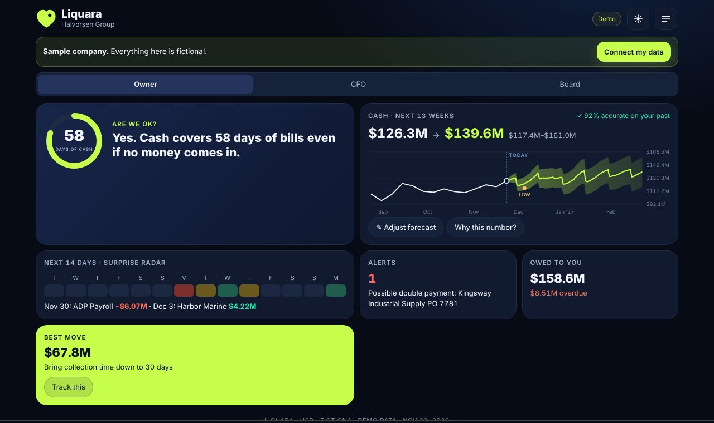
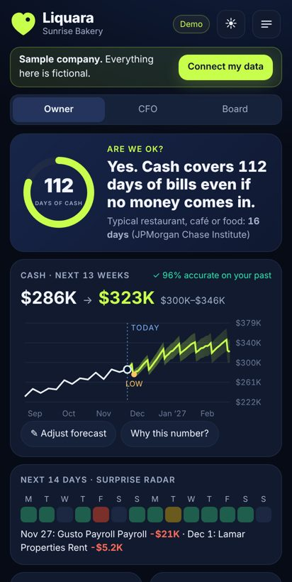
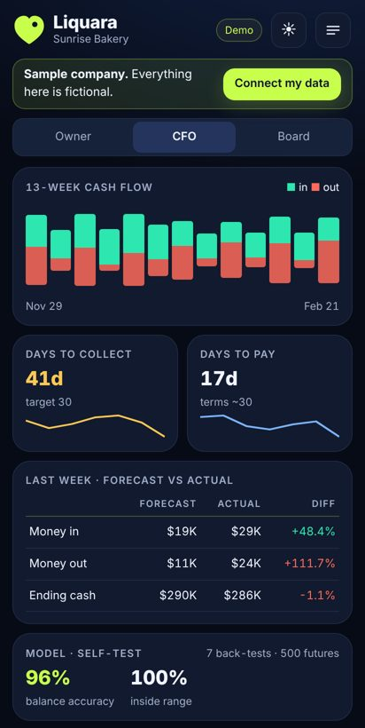
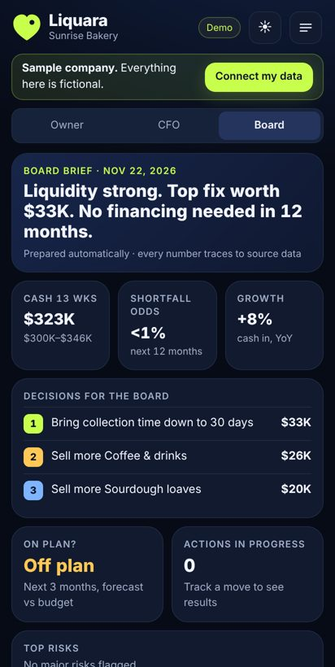

Liquara reads whatever data you have, from any bank, in any format. It forecasts your cash 13 weeks and 12 months ahead, grades itself on your own history before you trust it, finds savings, and answers the questions owners, CFOs and boards actually ask.
No setup call. Pick your size, see a sample company like yours, then connect your own data.

Chase, Wells Fargo, Byline, any credit union. Download files, corporate BAI2 / MT940 / camt.053 files, accounting exports or automatic bank connections.
Spreadsheets in any layout, CSV, PDFs, photos of bills, Word files, or just type "ServiceMax 1,800 a month." An AI reader files every item in the right place.
It learns payroll, rent, seasons and how late each customer pays, then runs 500 possible futures. You see the likely path and the range.
Before you rely on it, Liquara forecasts your past from older data and shows how close it got. In our sample companies: 91–96% balance accuracy.



Every recurring bill, or any cost you type in or upload, is checked against live prices: similar tools for less, and different approaches that save more, with sources and dates. Confirm the quote, switch, and the action tracker measures what you saved.
Under $10M revenue
$10M – $100M
$100M and up
Your card is held securely by Stripe and charged when the trial ends. Cancel any time inside the app.
Yes. Every bank lets you download transactions (CSV, Excel, QFX/OFX or PDF), and Liquara reads all of them. Larger companies can use the BAI2, MT940 or camt.053 files their bank already sends. Automatic connections through providers like Plaid, MX or Finicity are available as an add-on.
Your data is stored and analyzed on your own device. Only when you choose AI reading (for PDFs, photos and unusual files) or the savings finder is the relevant file or bill sent securely to the AI service to be read. Liquara keeps no copy on any server.
It tells you. Liquara forecasts your past from older data, compares with what really happened, picks the method that worked best for your business and widens the range by its own past misses. Accuracy depends on how complete your data is.
No. Liquara gives you estimates and analysis to support your decisions. For tax, legal or investment decisions, talk to a qualified professional.
Yes, for Android. On a laptop, iPhone or any browser, use Liquara right here on the web.